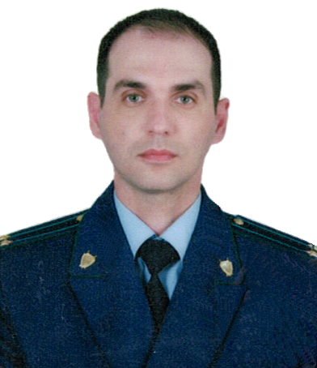

Заместитель начальника управления правовой статистики -
начальник отдела ведомственной статистики
и организационно-методического обеспечения
старший советник юстиции
Казанник Михаил Алексеевич
Адрес электронной почты в ИСОП: «Казанник М.А.»
м.т. +7-913-961-92-63